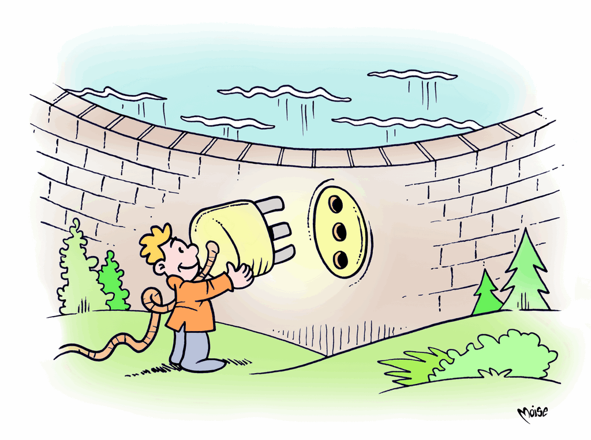

Energia idroelettrica
Le civiltà antiche già utilizzavano la potenza dell'acqua per produrre energia cinetica utilizzata a scopi irrigui o per macinare il grano. Le applicazioni e le tecnologie si sono evolute nel tempo e l'energia idraulica è stata utilizzata per numerosi altri opifici, quali concerie, segherie, filande, altiforni…
Fu però solo alla fine del XIX secolo che l'uomo iniziò ad utilizzare la forza dell'acqua per produrre energia elettrica, con l'evoluzione della ruota idraulica in turbina. Fu così realizzata una macchina motrice costituita da una ruota a pale imperniata su un asse, resa con le innovazioni tecnologiche sempre più efficiente e funzionale.
Gli impianti idroelettrici possono essere sostanzialmente di due tipi:
- impianti a bacino/serbatoio, che sfruttano il flusso dell'acqua contenuta in un bacino artificiale, creato realizzando sbarramenti lungo un corso d'acqua, chiamati dighe. L'acqua raccolta nel bacino viene convogliata a valle e, attraverso condotte forzate, raggiunge la centrale. All'interno della centrale la forza dell'acqua aziona una turbina idraulica, abbinata ad un alternatore, che trasforma l'energia cinetica in energia elettrica.
- impianti ad acqua fluente, costruiti lungo i corsi d'acqua, dove i dislivelli sono bassi, ma le portate notevoli e grandi masse d'acqua possono mettere in movimento le turbine.
